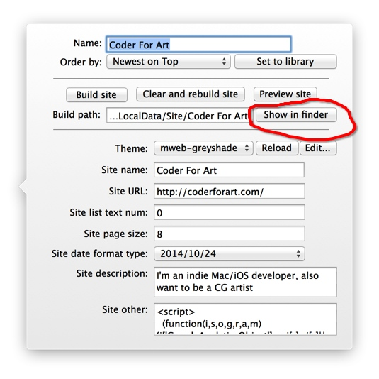
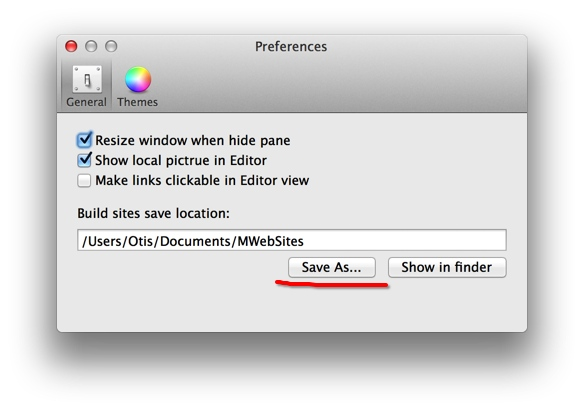
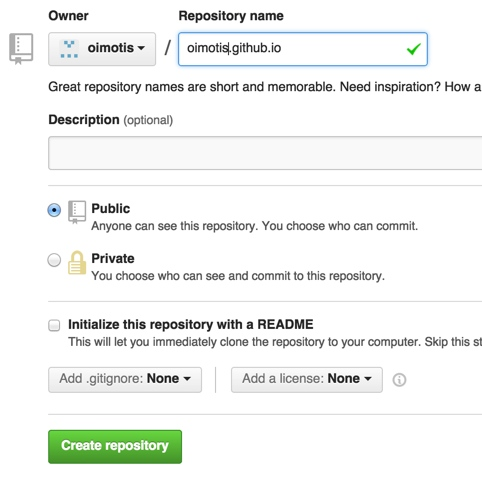
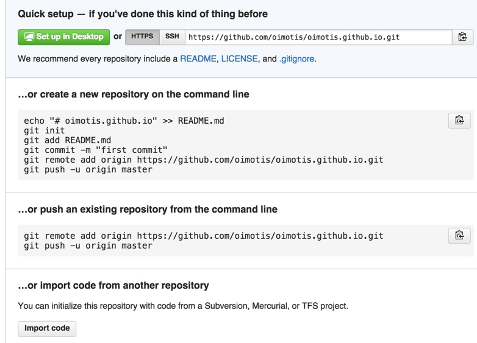
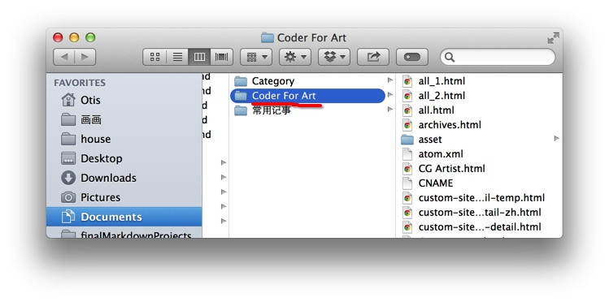
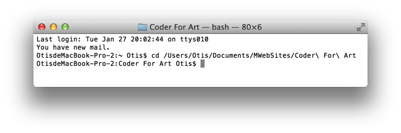
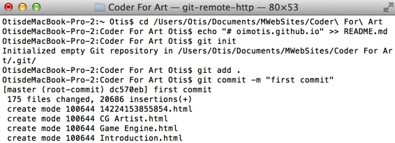
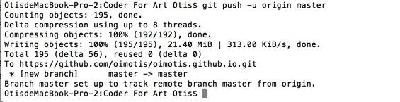
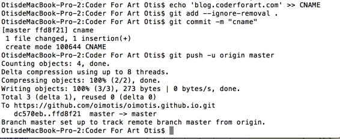
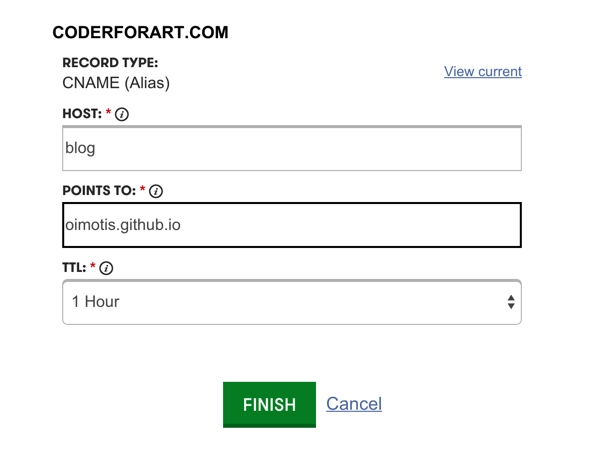

把生成的静态网站发布到github或FTP
看现在多几个人浏览，就花时间写这一篇了。
MWeb的优点是生成的网站都在你的本地电脑上，所以你可以备份、同步到Dropbox等网盘。当然也可以一键重新生成，您只需要备份好您的文档库即可。比如备份文档库到dropbox的方法为：
请打开终端工具(Terminal),并执行以下命令：
ln -s ~/Library/Containers/com.coderforart.MWeb/Data/Documents/MWeb ~/Dropbox/MWebBackup
可以看出来大概语法是：
ln -s ~/Library/Containers/com.coderforart.MWeb/Data/Documents/MWeb + 网盘同步的位置
这样就可以备份到任何网盘了。
您也可以把你的网站传到dropbox上，再分享出来，因为dropbox支持直接显示HTML，所以其它人就可以很方便查看。MWeb之后也会增加一些其他类型用途的主题模板。下面说一下如何找到MWeb生成的网站的位置，如图。

如果你觉得MWeb默认的位置比较不好，您可以改变MWeb网站输出的文件夹，如图我把输出的文件夹改到我的Documents/MWebSites下了。

这样话就比较好找了。
发布到github
github目前应该是最好的提供免费博客、网站服务的公司了（当然这其实并不是github的想法）。如果你有了github的帐号后只需要新增一个 Github repository，名称为username.github.io,如图

然后会看到这页：

这样就简单了，先进入MWeb生成的网站的所在文件夹（如上面所说，在MWeb中点Show in finder），我这里是选择 Coder For Art 然后 CMD+C。如图：

然后打开终端工具(Terminal)，打cd （注意cd后带一空格），然后CMD+V，然后Enter，如图：

然后再分别打入上边github提示的命令样本，注意我这边有改动到喔。再注意，如果你先前没有在MWeb中Build site，要先生成一下。
echo "# oimotis.github.io" >> README.md
git init
git add .
git commit -m "first commit"
git remote add origin https://github.com/oimotis/oimotis.github.io.git
git push -u origin master
效果如图：


可以看到已经传成功了，http://oimotis.github.io/ 直接用这个网址就可以浏览了。
下面就要自定域名了。
依次执行以下命令即可：
echo 'blog.coderforart.com' >> CNAME
git add --ignore-removal .
git commit -m "cname"
git push -u origin master
效果如图：

然后在域名中设定CNAME到oimotis.github.io（oimotis要换成你的github用户名）即可。 如图，这是我上边的设置

注意，我并没有真设置喔，所以 blog.coderforart.com 是无效的。
我的网站http://coderforart.com是设定CNAME文件的内容为：coderforart.com，CNAME的host为 www, POINTS TO:为 oulvhai.github.io，然后还要把 A Record（A记录）设置为 192.30.252.153 和 192.30.252.154 才行。
以后发新文章要更新，就执行以下命令即可：
git add --ignore-removal .
git commit -m "cname"
git push -u origin master
发布到FTP
对于一般用户来说，github可能比较麻烦，还是FTP简单。就直接传上FTP即可。如果你是在用 ForkLift 或者 Yummy FTP 这种有 可以自动同步本地和服务器端的文件夹的功能的FTP就更好用了，比github方便多了。具体我就不介绍了。
2/3更新 FTP上传可以看看这篇 万网（阿里云）免费虚拟主机体验
2/27更新 使用GoodSync把MWeb生成的静态网站自动同步到FTP、SFTP、WebDAV、Amazon S3等